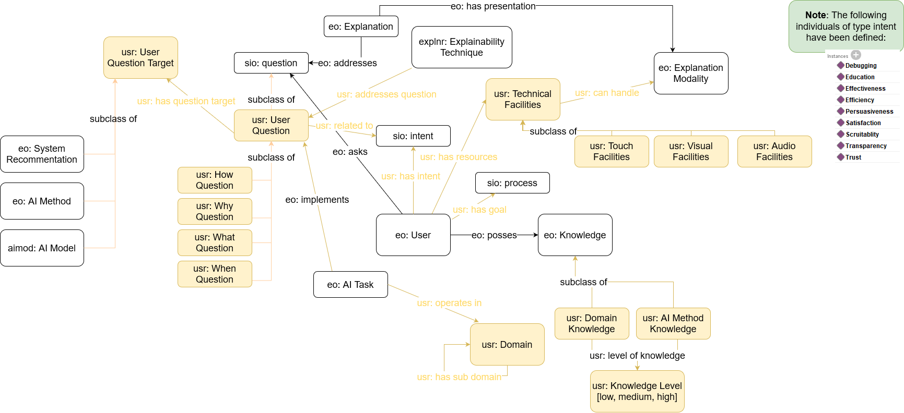

The User Ontology
- Latest version:
- https://www.w3id.org/iSeeOnto/user
- Contributors:
- Anjana Wijekoon
- Chamath Palihawadana
- David Corsar
- Ikechukwu Nkisi-Orji
- Juan A. Recio-Garcia
- Marta Caro Martínez
- Imported Ontologies:
- explanationPattern.owl
- sio.owl
- cpannotationschema.owl
- prov-o#
- explainer
- eo
- Download serialization:


- License:

- Cite as:
- The User Ontology.
Abstract
The User Ontology is an ontology that models users of the iSee platform. This includes capturing information related to users, their pre-existing knowledge (e.g., knowledge of the domain and/or AI techniques), their intent (i.e. goal/need for an explanation), and industry they are involved in. This ontology was created as part of the iSee project (https://isee4xai.com) which received funding from EPSRC under the grant number EP/V061755/1. iSee is part of the CHIST-ERA pathfinder programme for European coordinated research on future and emerging information and communication technologies.Introduction back to ToC
This is a place holder text for the introduction. The introduction should briefly describe the ontology, its motivation, state of the art and goals.Namespace declarations
| usr | <https://www.w3id.org/iSeeOnto/user> |
| schema | <http://schema.org> |
| void | <http://rdfs.org/ns/void> |
| owl | <http://www.w3.org/2002/07/owl> |
| resource | <http://semanticscience.org/resource> |
| xsd | <http://www.w3.org/2001/XMLSchema> |
| protege | <http://protege.stanford.edu/plugins/owl/protege> |
| cpannotationschema | <http://www.ontologydesignpatterns.org/schemas/cpannotationschema.owl> |
| skos | <http://www.w3.org/2004/02/skos/core> |
| eo | <https://purl.org/heals/eo> |
| rdfs | <http://www.w3.org/2000/01/rdf-schema> |
| cito | <http://purl.org/spar/cito> |
| prov-o | <http://www.w3.org/TR/prov-o> |
| usr | <http://www.w3id.org/iSeeOnto/explainer/user> |
| rdf | <http://www.w3.org/1999/02/22-rdf-syntax-ns> |
| terms | <http://purl.org/dc/terms> |
| xml | <http://www.w3.org/XML/1998/namespace> |
| vann | <http://purl.org/vocab/vann> |
| obo | <http://purl.obolibrary.org/obo> |
| prov | <http://www.w3.org/ns/prov> |
| user | <http://www.w3id.org/iSeeOnto/user> |
| foaf | <http://xmlns.com/foaf/0.1> |
| explainer | <http://www.w3id.org/iSeeOnto/explainer> |
| dc | <http://purl.org/dc/elements/1.1> |
The User Ontology: Overview back to ToC
This ontology has the following classes and properties.Classes
- AI Method Knowledge
- Audio Facilities
- Domain
- Domain Knowledge
- How Question
- Knowledge Level
- Technical Facilities
- User Question
- Visual Facilities
- What Question
- When Question
- Why Question
Object Properties
- addresses question
- can handle
- has goal
- has intent
- has question target
- has resources
- has subdomain
- level of knowledge
- operates in
Named Individuals
The User Ontology: Description back to ToC
Cross reference for The User Ontology classes, properties and dataproperties back to ToC
This section provides details for each class and property defined by The User Ontology.Classes
- AI Method Knowledge
- Audio Facilities
- Domain
- Domain Knowledge
- How Question
- Knowledge Level
- Technical Facilities
- User Question
- Visual Facilities
- What Question
- When Question
- Why Question
AI Method Knowledgec back to ToC or Class ToC
IRI: http://www.w3id.org/iSeeOnto/user#AIMethodKnowledge
- has super-classes
- knowledge
Audio Facilitiesc back to ToC or Class ToC
IRI: http://www.w3id.org/iSeeOnto/user#AudioFacilities
- has super-classes
- Technical Facilities c
- has members
- speaker ni
Domain Knowledgec back to ToC or Class ToC
IRI: http://www.w3id.org/iSeeOnto/user#DomainKnowledge
- has super-classes
- knowledge
How Questionc back to ToC or Class ToC
IRI: http://www.w3id.org/iSeeOnto/user#HowQuestion
- has super-classes
- User Question c
Knowledge Levelc back to ToC or Class ToC
IRI: http://www.w3id.org/iSeeOnto/user#KnowledgeLevel
Technical Facilitiesc back to ToC or Class ToC
IRI: http://www.w3id.org/iSeeOnto/user#TechnicalFacilities
- has super-classes
- has sub-classes
- Audio Facilities c, Visual Facilities c
User Questionc back to ToC or Class ToC
IRI: http://www.w3id.org/iSeeOnto/user#UserQuestion
- has super-classes
- s i o 000085
- has sub-classes
- How Question c, What Question c, When Question c, Why Question c
Visual Facilitiesc back to ToC or Class ToC
IRI: http://www.w3id.org/iSeeOnto/user#VisualFacilities
- has super-classes
- Technical Facilities c
- has members
- screen display ni
What Questionc back to ToC or Class ToC
IRI: http://www.w3id.org/iSeeOnto/user#WhatQuestion
- has super-classes
- User Question c
When Questionc back to ToC or Class ToC
IRI: http://www.w3id.org/iSeeOnto/user#WhenQuestion
- has super-classes
- User Question c
Why Questionc back to ToC or Class ToC
IRI: http://www.w3id.org/iSeeOnto/user#WhyQuestion
- has super-classes
- User Question c
Object Properties
- addresses question
- can handle
- has goal
- has intent
- has question target
- has resources
- has subdomain
- level of knowledge
- operates in
addresses questionop back to ToC or Object Property ToC
IRI: http://www.w3id.org/iSeeOnto/user#addressesQuestion
can handleop back to ToC or Object Property ToC
IRI: http://www.w3id.org/iSeeOnto/user#canHandle
- has super-properties
- top object property
has goalop back to ToC or Object Property ToC
IRI: http://www.w3id.org/iSeeOnto/user#hasGoal
- has domain
- user
- has range
- s i o 000006
has intentop back to ToC or Object Property ToC
IRI: http://www.w3id.org/iSeeOnto/user#hasIntent
has question targetop back to ToC or Object Property ToC
IRI: http://www.w3id.org/iSeeOnto/user#hasQuestionTarget
has resourcesop back to ToC or Object Property ToC
IRI: http://www.w3id.org/iSeeOnto/user#hasResources
has subdomainop back to ToC or Object Property ToC
IRI: http://www.w3id.org/iSeeOnto/user#hasSubDomain
level of knowledgeop back to ToC or Object Property ToC
IRI: http://www.w3id.org/iSeeOnto/user#levelOfKnowledge
operates inop back to ToC or Object Property ToC
IRI: http://www.w3id.org/iSeeOnto/user#operatesIn
Named Individuals
- debugging
- education
- effectiveness
- efficiency
- high
- low
- medium
- persuasiveness
- satisfaction
- screen display
- scruitablity
- speaker
- transparency
- trust
debuggingni back to ToC or Named Individual ToC
IRI: http://www.w3id.org/iSeeOnto/user#Debugging
- belongs to
- s i o 000358
educationni back to ToC or Named Individual ToC
IRI: http://www.w3id.org/iSeeOnto/user#Education
- belongs to
- s i o 000358
effectivenessni back to ToC or Named Individual ToC
IRI: http://www.w3id.org/iSeeOnto/user#Effectiveness
- belongs to
- s i o 000358
efficiencyni back to ToC or Named Individual ToC
IRI: http://www.w3id.org/iSeeOnto/user#Efficiency
- belongs to
- s i o 000358
highni back to ToC or Named Individual ToC
IRI: http://www.w3id.org/iSeeOnto/user#high
- belongs to
- Knowledge Level c
lowni back to ToC or Named Individual ToC
IRI: http://www.w3id.org/iSeeOnto/user#low
- belongs to
- Knowledge Level c
mediumni back to ToC or Named Individual ToC
IRI: http://www.w3id.org/iSeeOnto/user#medium
- belongs to
- Knowledge Level c
persuasivenessni back to ToC or Named Individual ToC
IRI: http://www.w3id.org/iSeeOnto/user#Persuasiveness
- belongs to
- s i o 000358
satisfactionni back to ToC or Named Individual ToC
IRI: http://www.w3id.org/iSeeOnto/user#Satisfaction
- belongs to
- s i o 000358
screen displayni back to ToC or Named Individual ToC
IRI: http://www.w3id.org/iSeeOnto/user#ScreenDisplay
- belongs to
- Visual Facilities c
scruitablityni back to ToC or Named Individual ToC
IRI: http://www.w3id.org/iSeeOnto/user#Scruitablity
- belongs to
- s i o 000358
speakerni back to ToC or Named Individual ToC
IRI: http://www.w3id.org/iSeeOnto/user#Speaker
- belongs to
- Audio Facilities c
transparencyni back to ToC or Named Individual ToC
IRI: http://www.w3id.org/iSeeOnto/user#Transparency
- belongs to
- s i o 000358
trustni back to ToC or Named Individual ToC
IRI: http://www.w3id.org/iSeeOnto/user#Trust
- belongs to
- s i o 000358
Legend back to ToC
op: Object Properties
dp: Data Properties
ni: Named Individuals
Acknowledgments back to ToC
The authors would like to thank Silvio Peroni for developing LODE, a Live OWL Documentation Environment, which is used for representing the Cross Referencing Section of this document and Daniel Garijo for developing Widoco, the program used to create the template used in this documentation.